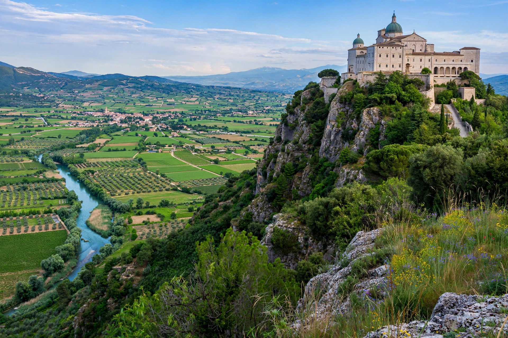

Monte Cassino
| Monte Cassino Abbey | |
|---|---|
| Location | Cassino, Province of Frosinone, Lazio, Italy |
| Elevation | 520 m (1,706 ft) |
| Order | Benedictines |
| Founded | c. 529 AD by Saint Benedict of Nursia |
| Destroyed | 577 (Lombards), 883 (Saracens), 1349 (earthquake), 1944 (Allied bombing) |

Monte Cassino (today usually spelled Montecassino) is a rocky hill about 130 kilometres (81 mi) southeast of Rome, in the Latin Valley, Italy, two kilometres west of the town of Cassino. It is best known for the first and most famous abbey of the Benedictine Order, founded by Saint Benedict of Nursia around 529 on the site of a Roman temple of Apollo, and for the Battle of Monte Cassino, one of the hardest-fought engagements of the Second World War, in which the abbey was destroyed by Allied bombing in February 1944 and later rebuilt.
The abbey
At Monte Cassino Benedict wrote the Rule of Saint Benedict, which became the foundational rule of Western monasticism. The abbey was repeatedly destroyed and rebuilt: sacked by the Lombards about 577, by Saracens in 883, ruined by earthquake in 1349, and sacked by French troops in 1799. Between destructions it became one of the great centres of learning and manuscript preservation in medieval Europe, famous for its library, scriptorium and the distinctive Beneventan hand. Its archives preserve some of the earliest documents written in the Italian vernacular, the Placiti Capuani of 960.
Battle of Monte Cassino
In late 1943 the abbey hill formed the anchor of the German Gustav Line across Italy. Four Allied battles between January and May 1944 — involving American, British, Indian, New Zealand, Free French, and finally Polish troops — sought to break through toward Rome. On 15 February 1944, believing German troops occupied the abbey (in fact German forces occupied the slopes, and the abbey itself sheltered Italian refugees), Allied bombers reduced it to rubble, killing some 230 Italian civilians sheltering inside. The ruins were then used as a defensive position. The hill was finally taken on 18 May 1944 by the Polish II Corps, which raised the Polish flag over the ruins. The abbey was reconsecrated by Pope Paul VI in 1964 after reconstruction "as it was, where it was".
See also
Battle of Monte Cassino · Benedict of Nursia · Rule of Saint Benedict · Cassino